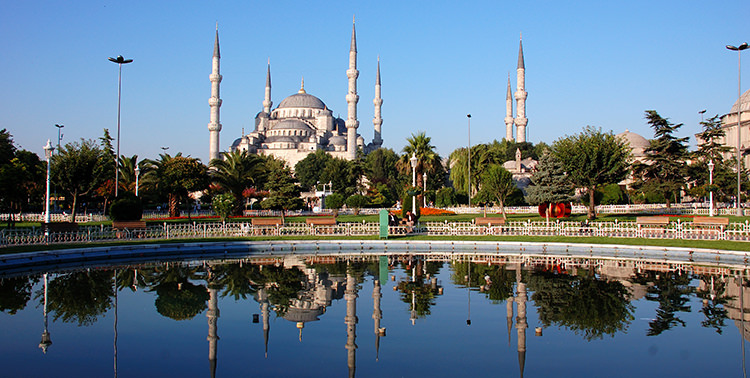

When To Visit Istanbul?
Most of people's favorite times to visit Istanbul are spring and fall. During those months, the climate is ideal. Does this mean that you shouldn’t plan an Istanbul city trip or holiday during summer or winter? Of course not! Istanbul is nice throughout the year, but every season has its pros and cons. Let me give you an overview, so you can pick the season that best suits your needs or expectations. 
Spring
While the astrological spring starts on March 21, in Istanbul spring generally starts somewhere mid-April. The weather becomes warm during the day and pleasantly cool at night, while rain showers are getting rare. You can expect average high temperatures between 18 C (65 F) and 27 C (81 F). See below for a yearly overview.
Another advantage of visiting Istanbul during spring is that you can witness the awakening of the city and Mother Nature. The city becomes more vivid (with the reopening of the terraces) and colorful (with the blossoms of the flowers in general, and the famous tulips in particular).
Summer
Summer, from mid-July to mid-September, is hot and often humid. Average daily highs are around 28 C (80 F), with especially in August peaks over 30 C (82 F).
While most Istanbulites escape the summer heat and head for the islands or the coasts, the summer months see a huge influx of tourists. Expect longer queues and take the necessary precautions to protect yourself from the sun (and air-conditioners). The biggest advantage this season has to offer is the ideal Bosphorus cruise conditions.
Fall (Autumn)
Fall or autumn lasts until the end of October, sometimes even mid-November. Temperatures are most of the time back to human levels (23 C or 70 F), but be prepared for surprises! One day can be hot and dry, while the next can be much cooler (15 C or 60 F) with short but intense rain showers.
All in all, together with spring it’s my favorite season to visit Istanbul.
Winter
Generally speaking winters are cold, with average day temperatures between 8 C (48 F) and 12 C (54 F). Snow showers are rare, but it rains frequently (see statistics below).
Now I can hear you think, “So, what are the advantages then?” Well, you can enjoy reduced hotel prices, visit all the tourist attractions much more relaxed, and experience the year-end celebrations and decorations.